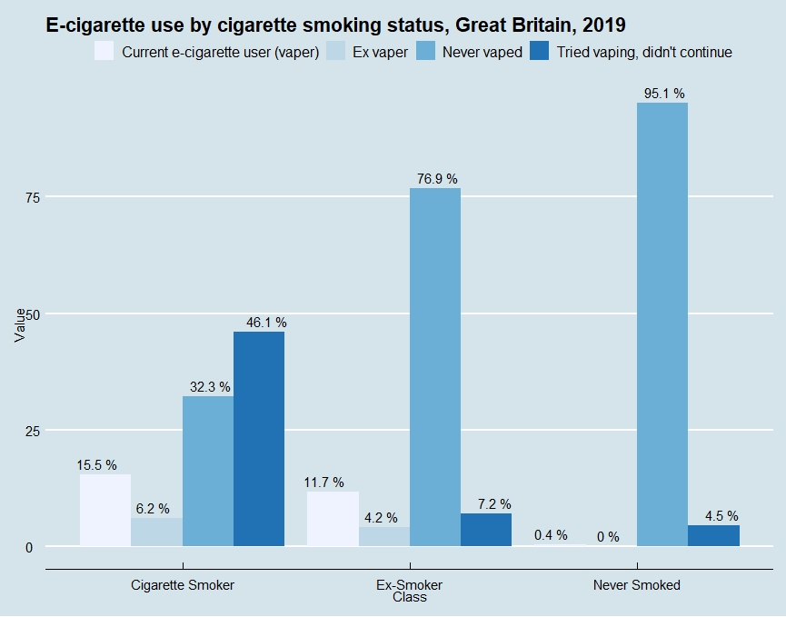
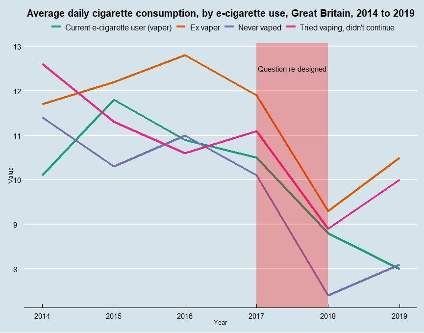
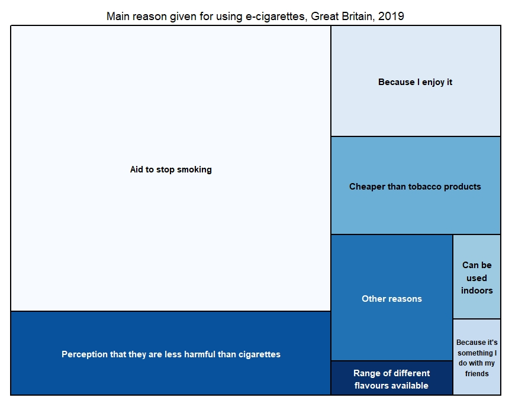
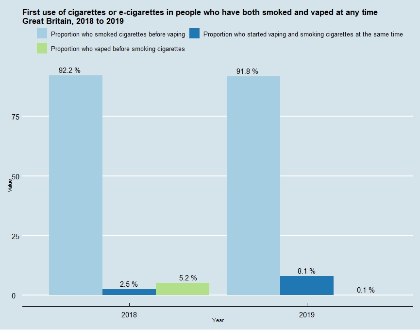

E-cigarettes Analysis
Ben Chaffe, 10/08/2020
E-cigarettes have been around for over 10 years now in the market. However it was first thought up by Herbert A Gilbert in 1963, but did not take off. Since then the market has rapidly grown and has also had some large setbacks with countries deciding to ban their use. Unlike tobacco, their long term effects is relatively unknown and multiple studies have to been done to understand them better.
The dataset I am using is titled E-cigarette use in Great Britain and it is available here from the ONS.
E-Cigarette use by age
There is a great concern about vaping with underage kids. The Juul device was seen as very popular with young children and often seen as a ‘Gateway’ into smoking tobacco. The below graph shows the percentage of people in the UK that use E-cigarettes by age group.

We can see that the majority of people who vape fall in the 25 to 34 category. The 16 to 24 group is also one of the lowest, probably due to underage people not vaping and not being able to buy a vape. People 60 and over also do not appear to be tring to vape either maybe because it is either too complicated or they have been smoking for a long time so see no reason to ty and quit or reduce their habit.
E-cigarette use by smoking status
If vaping is causing people to start smoking tobacco products, then we would expect to see non smokers using e-cigarettes. This graph shows whether people that vape have smoked in the past or still currently smoke.

We can see that 0% of people that have never smoked are currently using E-cigarettes, and those 4.5% that tried it did not continue to vape. 76.9% of ex-smokers hav never vaped and this could be due to vaping being relatively new and these people using methods such as nicotine patches or gum to quit smoking. There are also 46.1% of cigarette smokers that tried vaping but did not continue, which could be the fact that vaping is a different experience to smoking and them prefering a traditional cigaratte as opose to vaping.
It appears that vaping does not appeal to those that do not smoke, and therefore is not a gateway into smoking tobacco.
E-cigaratte use by smoking status and sex
If we split the above data into male and female categories we can see if there is a difference between the two.
We can see that slightly more males vape compared to females. There could be many reasons for this, including if there are more male smokers in the population then we would also expect to see more male vapers. Both show the same trends though, with the majority of both sexes not vaping if they have never smoked before.
Average cigarette consumption
The dataset also provides the avergae cigarette consumption by e-cigarette use. From this we can see if the amount that people smoke on average has an effect on whether they start vaping or not.

In 2015, 2016 and 2017 it is ex vapers that appear to smoke the most on average. This is also true when the question was redesigned in 2018. They explain the changes in the following:
We have changed the groups included in the table to make the data simpler and more consistent over time. The change in survey question has had a minimal/no impact for continuity for the proportion of current vapers and the proportion of those who have never vaped. The transformation has impacted the continuity of ex-vapers and the proportion of those who tried vaping but didn’t continue to vape. With the transformation, ex-vapers only includes those who have regularly vaped; previously it also included those who vaped occasionally. The proportion of those who tried vaping but didn’t continue to vape has consequentially increased slightly, as previously some of these respondents would have been counted in the ex-vaping group. For the changes made to cigarette consumption, this has produced a break in the time series, meaning that data collected from 2018 is not directly comparable with data collected previously.
Current e-cigarette users appear to be smoking less on average. While the split has made 2014-2017 and 2018-2019 incomparable, there has been a decline from 2015 to 2017 and again from 2018 to 2019, providing small evidence that vaping is helping to reduce tobacco consumption. Those that smoke the most are ex-vapers, suggesting that those that smoke the most, prefer to smoke tobacco and have reverted back, and maybe vaping is only effective for those that smoke less on average.
Reasons for vaping
Vaping is mainly marketed as a device to help stop smoking, but there are also other reasons for people to use these devices. The treemap below shows these reasons.

We can see that the main reasons are to stop smoking, with ‘Aid to stop smoking’, ‘Perception that they are less harmful than cigarettes’ and ‘Cheaper then tobacco products’ all in relation to tobacco products. As the data explains, respondents were asked to choose the main reason from the list of options above. Therefore people could chose the option ‘Because I enjoy it’ but also be using it as an aid to stop or reduce their smoking.
First use of cigarettes or e-cigarettes in people who have both smoked and vaped at any time
To further show that e-cigarettes don’t promote smoking tobacco products, we can visualise the data about peoples first use of cigarettes or e-cigarettes.

We can see that the proportion that vaped before smoking cigarettes is low, with only 5.2% in 2018 and only 0.1% in 2019. The vast majority, over 90% for both years, started smoking before vaping.
E-cigarettes can be useful aid to people who wish the quit smoking, and we can see that is the predominant reason for their use. There are of course going to be people that vape for other reasons, and with a growing range of flavours (with or without nicotine) and CBD becoming more popular, we could see vaping become even more popular. However, there is strong evidence to suggest that vaping in Great Britain is not a gateway into smoking and has done a lot more to prevent smoking
I have used R throughout to visualise the data and produce these plots.